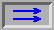
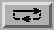
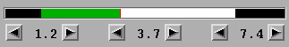
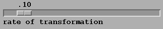

rewind to the beginning
make one step in reverse
play in reverse
stop
play forward
make one step forward
rewind to the end
play in one direction with a pause between runs
play in both directions with a pause between change of direction
play frames in a loop with interpolation between the last and the first frames
type of interpolation (Linear or Cubic)

Green line shows current position of object in the frame series. Green line can be adjusted with the mouse (while holding the middle button) or with central pair of arrow buttons.
Line turns red when adjusting with mouse:
Black lines show position of the left and right limits. They can be adjusted with mouse (while holding the left button), or with the pairs of buttons below the indicator (on the left and right sides.
If adjusting with the mouse, a small yellow bar appears to indicate that the mouse is over the boundary:
Note: In the LOOP mode, limits can only be incremented or decremented by a whole number of frames.

The speed of interpolation. 1/rate equals the number of steps between two frames
Comments to: kishkov@cs.indana.edu
Created: Jul 21 1998 .